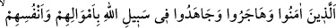

Bir başkası da: “Allah yolunda cihad etmek, sizin söylediğiniz amellerden daha
üstündür.” dedi.
Bunun üzerine Hz. Ömer konuşmalara müdahele ederek “Rasûlullah’ın minberi
yanında sesinizi yükseltmeyin. Namazdan sonra gidin ihtilaf ettiğiniz bu konuyu
Rasûlullah (s.a.)’e sorun.” diyerek onları susturdu. Günlerden cuma idi. Derken
Rasûlullah (s.a.) mescide girdi. İşte o sırada bu ayet nâzil oldu.
Ey müşrikler veya hacılara su dağıtmayı (sikayet), Mescid-i Harâm’ı imar (imâret) ve
benzeri hizmetleri hicrete, cihâda ve benzerlerine tercih eden müminler, “siz hacılara
su vermeyi ve Mescid-i Harâm’ı imar etmeyi” fazîlet ve derecesinin yüksekliği
bakımından “Allah’a, âhiret gününe inanan ve Allah yolunda cihad edenle bir mi
tuttunuz?”
“
sikâyet (hacılara su dağıtmak)” ve “
imâret (Mescid-i Haram’ı imar
etmek)” kelimeleri masdardır. Onların insanlara benzetilmesi düşünülemez. Bu sebeple
iki taraftan birine bir muzaf takdir etmek gerekir. Yâni su dağıtma ve imar işini
yapanlar, iman edip cihad edenler gibi olabilirler mi hiç? Ya da şöyle bir mânâ ortaya
çıkar: Hacılara su dağıtma ve Mescid-i Haram’ı imar etme işi, Allah’a ve ahiret gününe
iman eden müminin imanı gibi midir?
Aslında hacılara su verme ve Mescid-i Haram’ı imar etme hayırlı amellerdendir.
Fakat bunları yapanların îman edenlere benzetilmesi doğru olmadığı gibi bu amellerin
iman ve cihad gibi en önemli dînî esaslara benzetilmesi de uygun görülmemiştir.
Nitekim Allah Teâlâ bunu şöyle beyan etmektedir:
“Bunlar Allah katında bir olmazlar.” Yâni bunlardan birinci grup ikinciye eşit
değildir. Çünkü vasıfları farklıdır. Dolayısıyla vasıfları da eşit değildir. Çünkü kişiler
vasıfları ile birbirinden ayrılırlar.
“Allah zâlimler” yâni kâfirler, şirk koşarak ve Rasûl (s.a.)’e düşmanlık ederek zâlim
olanlar ile dalâlet çukuruna yuvarlananlar “topluluğuna hidâyet vermez.” Şu halde
onlar Allah’ın kendilerine hidayet bahşettiği, hak ve doğru olana muvaffak kıldığı
kimselerle nasıl denk olabilirler?
20. İnanan, hicret eden, Allah yolunda mallarıyla ve canlarıyla savaşanların Allah
katında dereceleri daha büyüktür. İşte kurtuluşa erenler onlardır.
Müşriklerin dalaletini ve müminlerle eşit olmadıklarını beyan ettikten sonra iman
ehlinin derecelerine işaret için şöyle buyuruluyor:
“İnanan,” vatanlarını bırakıp Rasûlullah’a “hicret eden,” düşmana karşı “Allah
yolunda” Allah’a itaat kasdıyla “mallarıyla” mallarını mücahitlere harcamak ve
onların savaş gereçlerini hazırlamak suretiyle “ve canlarıyla” nefislerini savaş